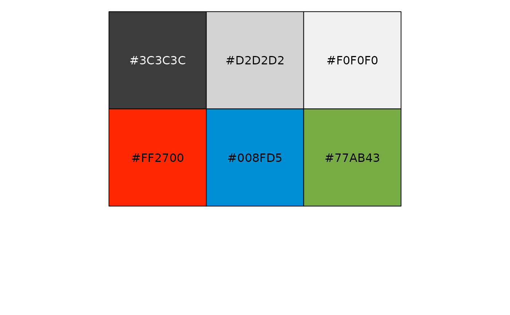
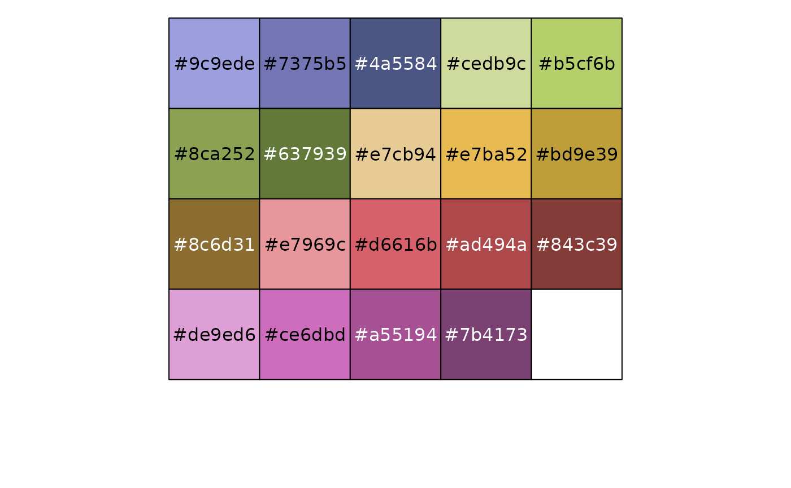
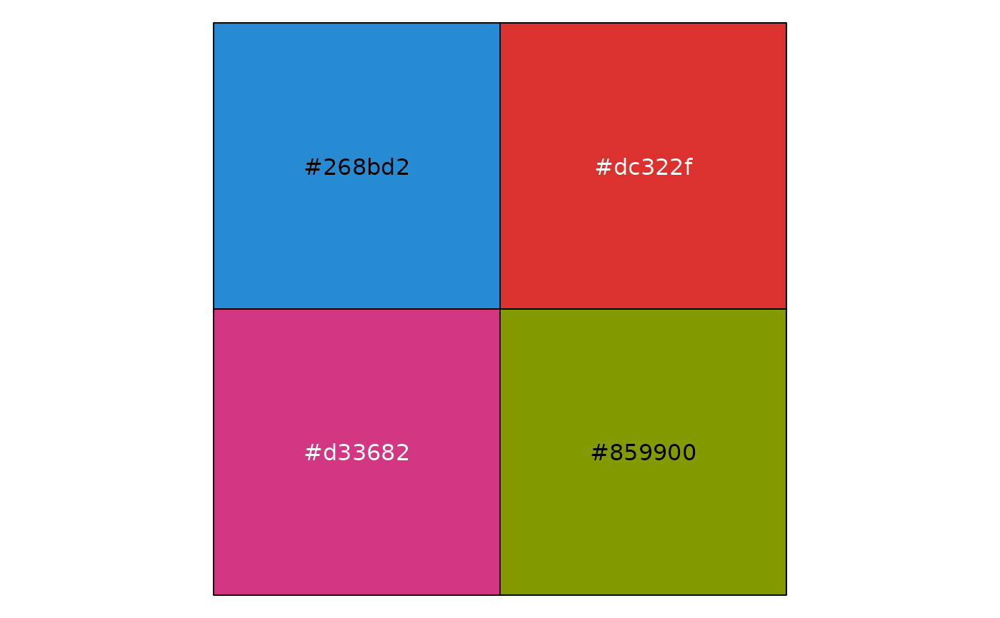
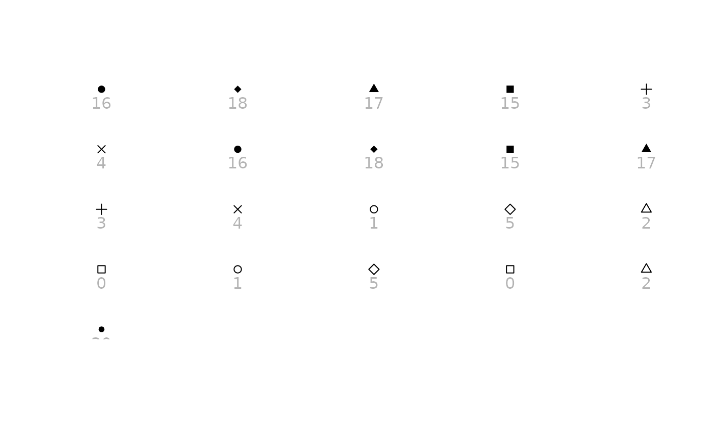
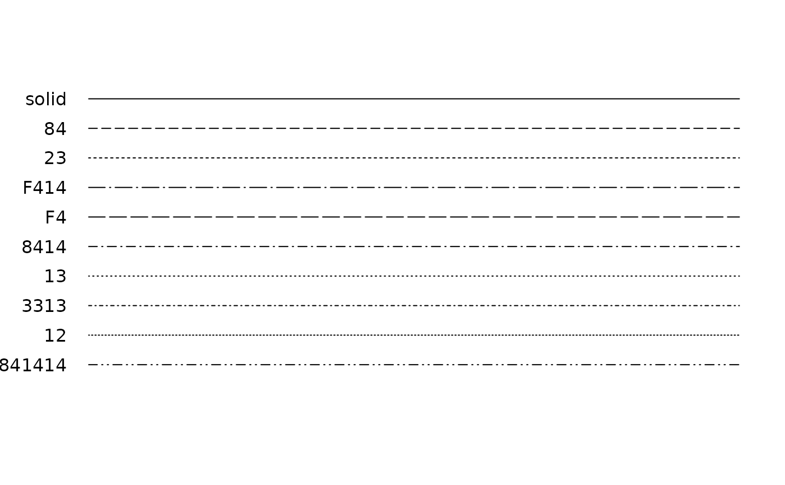

The ggthemes environment contains various values used in
themes and palettes. This is undocumented and subject to change.
Details
ggthemes_data$stata$colors$names spans both generations of Stata's
named colors: the classic set plus the gs0–gs16 gray scale,
and the stc1–stc15 colors added in Stata 18. See
stata_pal().
Colors, shapes and linetypes are stored with the theme they belong to. The
Package data
article on the package website draws every one of them. ggthemes_data
contains no fonts: themes set their typefaces in code.
Examples
library("scales")
## One element per theme
names(ggthemes_data)
#> [1] "solarized" "ptol" "calc" "numbers"
#> [5] "tableau" "few" "manyeyes" "gdocs"
#> [9] "excel" "wsj" "colorblind" "shapes"
#> [13] "stata" "hc" "fivethirtyeight" "economist"
## Colors are stored as tables of names and hex values ...
ggthemes_data$fivethirtyeight
#> # A tibble: 6 × 2
#> name value
#> <chr> <chr>
#> 1 Dark Gray #3C3C3C
#> 2 Medium Gray #D2D2D2
#> 3 Light Gray #F0F0F0
#> 4 Red #FF2700
#> 5 Blue #008FD5
#> 6 Green #77AB43
show_col(ggthemes_data$fivethirtyeight$value)

## ... as plain hex vectors ...
show_col(ggthemes_data$manyeyes)

## ... or once per number of colors
show_col(ggthemes_data$solarized$palettes$blue[[4]])

## Shapes give a base R symbol (pch), where there is one, and the Unicode
## character they were transcribed from
stata_shapes <- ggthemes_data$stata$shapes
stata_shapes[c("symbolstyle", "character", "pch")]
#> # A tibble: 22 × 3
#> symbolstyle character pch
#> <chr> <chr> <int>
#> 1 circle ● 16
#> 2 diamond ⬥ 18
#> 3 triangle ▲ 17
#> 4 square ■ 15
#> 5 plus ➕ 3
#> 6 X ✖ 4
#> 7 smcircle • 16
#> 8 smdiamond ⬩ 18
#> 9 smsquare ▪ 15
#> 10 smtriangle ▴ 17
#> # ℹ 12 more rows
show_shapes(stata_shapes$pch)

## Linetypes are dash patterns
show_linetypes(ggthemes_data$stata$linetypes[1:10])
